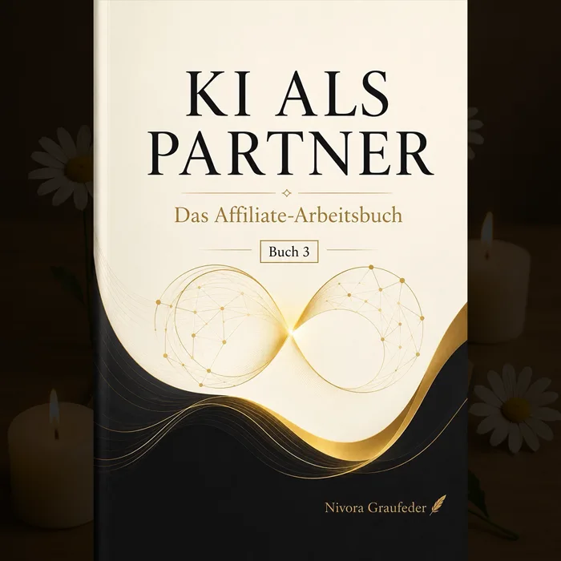

Bei Amazon ansehenKünstliche Intelligenz gehört mittlerweile für viele Menschen ganz selbstverständlich zum Alltag. Man stellt ChatGPT eine Frage, lässt sich eine Idee geben oder bittet um Hilfe bei einem Text. Doch oft bleibt es genau dabei: bei einzelnen Fragen und kurzen Antworten.
Dabei kann KI viel mehr sein als nur ein digitales Nachschlagewerk.
Mit dem Buch „KI als Partner – Das Affiliate-Arbeitsbuch“ möchte ich zeigen, wie Künstliche Intelligenz zu einer echten Unterstützung beim Aufbau eines Affiliate-Business werden kann. Nicht als Ersatz für die eigenen Gedanken und Entscheidungen, sondern als Partner, der beim Planen, Strukturieren, Schreiben und Weiterentwickeln hilft.
🤖 KI nicht nur fragen, sondern richtig einsetzen
Viele Menschen nutzen ChatGPT, Claude oder andere KI-Programme bereits. Sie lassen sich Texte schreiben, suchen nach Ideen oder möchten schnell eine Antwort auf eine bestimmte Frage bekommen.
Das ist natürlich ein guter Anfang. Doch häufig wird das eigentliche Potenzial der KI dabei noch gar nicht ausgeschöpft.
Denn eine KI kann dich nicht nur beim Schreiben eines einzelnen Textes unterstützen. Sie kann gemeinsam mit dir ein Thema entwickeln, eine Zielgruppe genauer bestimmen, passende Inhalte planen und daraus Schritt für Schritt ein vollständiges Affiliate-Projekt entstehen lassen.
Genau darum geht es in diesem Arbeitsbuch.
Du sollst KI nicht einfach nur gelegentlich benutzen, sondern lernen, wie du gezielt mit ihr zusammenarbeiten kannst.
📘 Mehr als nur ein Buch zum Durchlesen
„KI als Partner – Das Affiliate-Arbeitsbuch“ ist kein klassischer Ratgeber, bei dem man viele Seiten Theorie liest und am Ende trotzdem nicht genau weiß, womit man anfangen soll.
Das Buch ist so aufgebaut, dass du direkt mitarbeiten kannst.
Du findest darin Aufgaben, Checklisten, Vorlagen und Ausfüllfelder, mit denen du dein eigenes Affiliate-Business Schritt für Schritt entwickelst. Die einzelnen Kapitel bauen aufeinander auf und führen dich von der ersten Idee bis zu einem konkreten Plan für deine Inhalte und deine weitere Arbeit.
Dabei spielt es keine Rolle, ob du noch ganz am Anfang stehst oder bereits erste Erfahrungen gesammelt hast.
Du kannst das Arbeitsbuch in deinem eigenen Tempo durcharbeiten, einzelne Aufgaben noch einmal wiederholen oder bestimmte Kapitel später erneut zur Hand nehmen.
🧭 Von der ersten Idee zum eigenen Thema
Eine der ersten Fragen beim Affiliate-Marketing lautet meistens:
Worüber soll ich überhaupt schreiben?
Vielleicht hast du mehrere Interessen und kannst dich nicht entscheiden. Vielleicht hast du bereits eine Idee, weißt aber noch nicht, ob sie sich für ein Affiliate-Projekt eignet. Oder du möchtest anfangen, hast bisher jedoch noch kein passendes Thema gefunden.
Die KI kann dir dabei helfen, deine Interessen genauer zu betrachten und daraus mögliche Themenbereiche zu entwickeln.
Sie kann dir Fragen stellen, Ideen sortieren und dir zeigen, welche Unterthemen zu deinem gewählten Bereich passen könnten. Dadurch entsteht nach und nach eine klarere Richtung.
Trotzdem entscheidest immer noch du selbst, welches Thema wirklich zu dir passt.
Denn ein Affiliate-Projekt sollte nicht nur auf möglichen Einnahmen beruhen. Es sollte auch ein Thema behandeln, über das du länger schreiben möchtest und mit dem du dich gern beschäftigst.
✍️ Unterstützung beim Schreiben deiner ersten Artikel
Der erste Blogartikel kann manchmal schwieriger sein als alle späteren.
Man weiß vielleicht schon, worüber man schreiben möchte, sitzt dann aber vor einer leeren Seite und findet keinen richtigen Anfang. Oder man hat viele Gedanken im Kopf, bekommt sie jedoch nicht in eine verständliche Reihenfolge.
Auch hier kann die KI eine wertvolle Unterstützung sein.
Sie kann dir helfen, eine Gliederung zu erstellen, passende Überschriften zu finden oder einzelne Themen ausführlicher zu erklären. Außerdem kann sie Texte überarbeiten, Wiederholungen erkennen und Vorschläge machen, wenn ein Abschnitt noch nicht ganz rund klingt.
Wichtig ist dabei jedoch, dass deine eigene Stimme erhalten bleibt.
Ein guter Blogartikel sollte nicht wie ein beliebiger KI-Text klingen. Er sollte zeigen, wie du über ein Thema denkst, welche Erfahrungen du gemacht hast und warum du ein bestimmtes Produkt oder eine bestimmte Lösung erwähnst.
Die KI liefert dir eine Grundlage und unterstützt dich beim Schreiben. Deine Persönlichkeit macht daraus jedoch erst deinen eigenen Inhalt.
🛍️ Passende Produkte für dein Affiliate-Projekt finden
Affiliate-Marketing bedeutet nicht, wahllos irgendwelche Produkte zu verlinken.
Die empfohlenen Produkte sollten zu deinem Thema, deinen Inhalten und vor allem zu den Menschen passen, die deinen Blog lesen.
Wenn du beispielsweise über Bücher schreibst, könnten Bücher, Leselampen, Notizbücher oder Zubehör rund ums Lesen interessant sein. Bei einem Kochblog kommen dagegen Küchengeräte, Backformen, Zutaten oder Rezeptbücher infrage.
Die KI kann dir helfen, mögliche Produktgruppen zu sammeln und deine Auswahl genauer zu strukturieren.
Sie kann dir außerdem Fragen vorschlagen, mit denen du prüfen kannst, ob ein Produkt wirklich zu deinem Blog passt:
Passt es zu meiner Zielgruppe?
Löst es ein konkretes Problem?
Kann ich ehrlich darüber schreiben?
Passt es zum Inhalt meines Artikels?
Würde ich es selbst empfehlen?
Dadurch werden Produktempfehlungen nicht nur passender, sondern auch glaubwürdiger.
📧 Schritt für Schritt zur eigenen E-Mail-Liste
Eine E-Mail-Liste kann im Affiliate-Marketing sehr wertvoll sein.
Besucherinnen und Besucher kommen vielleicht über einen bestimmten Artikel auf deinen Blog, lesen ihn und verschwinden danach wieder. Über einen Newsletter kannst du jedoch langfristig mit ihnen in Kontakt bleiben.
Du kannst neue Beiträge vorstellen, hilfreiche Tipps teilen oder auf passende Empfehlungen aufmerksam machen.
Für Einsteiger wirkt der Aufbau eines Newsletters allerdings schnell kompliziert. Man braucht eine Idee für die Inhalte, einen Grund für die Anmeldung und später regelmäßig neue E-Mails.
Auch bei diesen Aufgaben kann die KI unterstützen.
Sie kann dir Ideen für ein kostenloses Geschenk zur Newsletter-Anmeldung liefern, Betreffzeilen vorschlagen oder dir helfen, eine kleine Willkommensserie zu entwickeln.
Das Arbeitsbuch zeigt dir dabei nicht nur, was du machen könntest, sondern gibt dir konkrete Aufgaben, Prompts und Vorlagen an die Hand.
💡 Über 45 fertige Prompts zum direkten Ausprobieren
Ein wichtiger Bestandteil des Buches sind die mehr als 45 enthaltenen KI-Prompts.
Ein Prompt ist die Anweisung oder Frage, die du einer KI gibst. Je genauer diese Anweisung formuliert ist, desto hilfreicher fällt meistens auch das Ergebnis aus.
Eine sehr allgemeine Frage wie:
„Schreib mir einen Blogartikel über Bücher“
liefert zwar einen Text, aber vermutlich keinen, der genau zu deinem Blog, deiner Zielgruppe und deinem persönlichen Stil passt.
Ein ausführlicher Prompt kann dagegen festlegen, für wen der Artikel geschrieben wird, welches Ziel er hat, welche Themen enthalten sein sollen und wie der Ton des Textes klingen darf.
Die Prompts im Arbeitsbuch kannst du direkt verwenden und an dein eigenes Thema anpassen. Dadurch musst du nicht jedes Mal bei null beginnen und kannst gleichzeitig lernen, wie gute Anweisungen für eine KI aufgebaut sind.
🧩 Echte Beispiele statt nur allgemeiner Erklärungen
Theorie kann hilfreich sein, doch manchmal versteht man einen Ablauf erst richtig, wenn man ein konkretes Beispiel sieht.
Deshalb enthält das Buch nicht nur Erklärungen, sondern auch durchgearbeitete Praxisfälle.
Du kannst nachvollziehen, wie aus einer ersten Idee ein Thema entsteht, wie daraus passende Artikel geplant werden und wie geeignete Produkte ausgewählt werden können.
Die Beispiele sollen dir dabei keine fertige Lösung vorsetzen, die du einfach kopieren musst. Sie dienen vielmehr als Orientierung.
Du kannst erkennen, welche Fragen gestellt wurden, warum bestimmte Entscheidungen getroffen wurden und wie sich die einzelnen Schritte miteinander verbinden.
Dadurch fällt es leichter, die Vorgehensweise auf dein eigenes Affiliate-Projekt zu übertragen.
✅ Aufgaben, Checklisten und Vorlagen für dein Business
Ein Arbeitsbuch lebt davon, dass man nicht nur liest, sondern selbst aktiv wird.
In „KI als Partner – Das Affiliate-Arbeitsbuch“ findest du deshalb verschiedene Aufgaben und Vorlagen, die du direkt für dein eigenes Projekt nutzen kannst.
Du kannst deine Ideen festhalten, Themen sammeln, Zielgruppen genauer beschreiben und erste Content-Pläne entwickeln.
Checklisten helfen dir dabei, wichtige Schritte nicht zu vergessen. Gleichzeitig kannst du jederzeit sehen, was du bereits erledigt hast und welche Aufgaben noch vor dir liegen.
Gerade am Anfang kann diese Struktur sehr hilfreich sein. Ein Affiliate-Business besteht schließlich aus vielen kleinen Bereichen, die zunächst schnell unübersichtlich wirken können.
Wenn du jedoch Schritt für Schritt vorgehst, wird aus einem großen Vorhaben nach und nach ein klarer und machbarer Plan.
📅 Mit einem konkreten 30-Tage-Plan starten
Viele gute Ideen scheitern nicht daran, dass sie unmöglich wären.
Sie scheitern oft daran, dass man nicht weiß, womit man zuerst anfangen soll.
Vielleicht möchtest du einen Blog starten, denkst aber gleichzeitig über das Design, die ersten Artikel, Produkte, Social Media, Newsletter und Suchmaschinenoptimierung nach. Dadurch entsteht schnell das Gefühl, alles gleichzeitig erledigen zu müssen.
Der enthaltene 30-Tage-Plan soll dir dabei helfen, genau dieses Chaos zu vermeiden.
Du bekommst für jeden Abschnitt konkrete Aufgaben, die dich Schritt für Schritt voranbringen. So kannst du dich immer auf den nächsten machbaren Schritt konzentrieren, anstatt das gesamte Projekt auf einmal bewältigen zu wollen.
Am Ende der 30 Tage soll nicht alles perfekt sein. Aber du hast eine Grundlage geschaffen, auf der du weiterarbeiten kannst.
🌱 Für Einsteiger und alle, die mehr Struktur brauchen
Das Arbeitsbuch richtet sich vor allem an Menschen, die mit Affiliate-Marketing beginnen möchten und KI dabei gezielt einsetzen wollen.
Du brauchst keine besonderen technischen Kenntnisse und musst auch kein Profi im Schreiben sein.
Hilfreich ist vor allem die Bereitschaft, selbst mitzuarbeiten, Aufgaben auszufüllen und eigene Entscheidungen zu treffen.
Auch wenn du bereits erste Schritte im Affiliate-Marketing gegangen bist, kann dir das Buch dabei helfen, deine bisherigen Ideen zu ordnen und deinen Arbeitsablauf zu verbessern.
Vielleicht hast du bereits einen Blog, veröffentlichst aber nur unregelmäßig. Vielleicht fehlen dir neue Artikelideen oder du weißt nicht, wie du deine Produktempfehlungen sinnvoll einbauen kannst.
In solchen Fällen kannst du einzelne Kapitel gezielt nutzen, ohne das gesamte Buch wieder von vorne durcharbeiten zu müssen.
⚖️ KI bleibt ein Werkzeug – du behältst die Verantwortung
Bei aller Begeisterung für Künstliche Intelligenz ist eines besonders wichtig:
Eine KI nimmt dir nicht jede Entscheidung ab.
Sie kennt deine persönlichen Erfahrungen nicht automatisch, kann Fehler machen und manchmal Informationen liefern, die überprüft werden müssen.
Deshalb solltest du Ergebnisse niemals ungeprüft übernehmen.
Gerade bei Produktempfehlungen, rechtlichen Hinweisen, Preisangaben oder aktuellen Informationen ist es wichtig, selbst noch einmal nachzusehen.
Auch deine persönliche Meinung kann eine KI nicht ersetzen.
Sie kann dir helfen, deine Gedanken verständlicher auszudrücken. Doch sie kann nicht für dich entscheiden, ob du ein Produkt wirklich gut findest oder ob eine Empfehlung zu deinem Blog passt.
Die beste Zusammenarbeit entsteht dann, wenn du die Richtung vorgibst und die KI dich bei der Umsetzung unterstützt.
🚀 Ein Affiliate-Business entsteht nicht durch einen einzigen Prompt
Es klingt manchmal so, als müsse man nur eine KI öffnen, einen passenden Satz eingeben und schon entsteht daraus automatisch ein erfolgreiches Online-Business.
Ganz so einfach ist es natürlich nicht.
Auch mit KI braucht ein Affiliate-Projekt Zeit, Geduld und regelmäßige Arbeit. Artikel müssen geplant, geschrieben und überarbeitet werden. Inhalte sollten hilfreich sein, Produktempfehlungen müssen sinnvoll eingebaut werden und Vertrauen entsteht nicht über Nacht.
Die KI kann viele dieser Aufgaben erleichtern.
Sie kann dir helfen, schneller Ideen zu entwickeln, klarer zu planen und bei Schreibblockaden wieder einen Anfang zu finden. Sie kann dir aber nicht jede Arbeit vollständig abnehmen.
Genau deshalb trägt das Buch den Titel „KI als Partner“.
Ein Partner unterstützt dich, arbeitet mit dir zusammen und hilft dir dabei, deine Ziele zu erreichen. Er übernimmt aber nicht dein gesamtes Projekt, während du selbst nichts mehr tun musst.
✨ Was du am Ende in den Händen hältst
Nachdem du das Arbeitsbuch vollständig durchgearbeitet hast, besitzt du nicht nur neues Wissen über KI und Affiliate-Marketing.
Du hast bereits an deinem eigenen Projekt gearbeitet.
Du hast ein Thema entwickelt, deine Zielgruppe betrachtet, Ideen für Artikel gesammelt, passende Produkte ausgewählt und erste Schritte für deinen Newsletter und deine zukünftigen Inhalte geplant.
Vielleicht ist dein Affiliate-Business zu diesem Zeitpunkt noch nicht vollständig fertig. Doch es besteht auch nicht mehr nur aus einer Idee in deinem Kopf.
Du hast eine konkrete Grundlage geschaffen und weißt, wie du weiterarbeiten kannst.
Und vielleicht ist genau das der wichtigste Unterschied zwischen einem gewöhnlichen Ratgeber und einem Arbeitsbuch:
Du legst es nicht nach dem Lesen zur Seite, sondern entwickelst währenddessen bereits etwas Eigenes.
📘 Jetzt mit KI und Affiliate-Marketing starten
Mit „KI als Partner – Das Affiliate-Arbeitsbuch“ bekommst du einen praxisnahen Begleiter für deine ersten oder nächsten Schritte im Affiliate-Marketing.
Die 20 Kapitel, über 45 fertigen Prompts, Aufgaben, Checklisten, Beispiele und der 30-Tage-Plan helfen dir dabei, deine Ideen nicht nur zu sammeln, sondern wirklich umzusetzen.
Das Buch eignet sich für alle, die KI nicht nur gelegentlich etwas fragen möchten, sondern sie gezielt für den Aufbau ihres eigenen Projekts einsetzen wollen.
Dabei geht es nicht darum, möglichst viele Texte automatisch erstellen zu lassen. Es geht darum, einen sinnvollen Arbeitsablauf zu entwickeln, bei dem deine Ideen, deine Erfahrungen und deine Persönlichkeit im Mittelpunkt bleiben.
🤖 Mit KI Ideen entwickeln und umsetzen💭 Mein persönlicher Gedanke zum Buch
Ich möchte dir dieses Arbeitsbuch ans Herz legen, weil es zeigt, dass Künstliche Intelligenz weit mehr kann, als nur einzelne Fragen zu beantworten oder schnell einen Text zu erstellen.
Richtig eingesetzt kann sie dir helfen, aus einer ersten Idee Schritt für Schritt ein eigenes Affiliate-Projekt zu entwickeln. Mit klaren Aufgaben, fertigen Prompts und vielen praktischen Beispielen begleitet dich das Buch von der Themenfindung bis zu deinen ersten Inhalten, Produktempfehlungen und Newsletter-Ideen.
„KI als Partner – Das Affiliate-Arbeitsbuch“ ist dabei kein Versprechen auf schnellen Erfolg ohne Arbeit. Es ist vielmehr ein praktischer Begleiter, der dir zeigt, wie du deine eigene Arbeit besser strukturieren und KI sinnvoll in deinen Alltag einbauen kannst.
Denn am Ende soll die KI nicht für dich denken, sondern dir dabei helfen, deine eigenen Gedanken, Ideen und Ziele leichter umzusetzen. 🤖📘✨